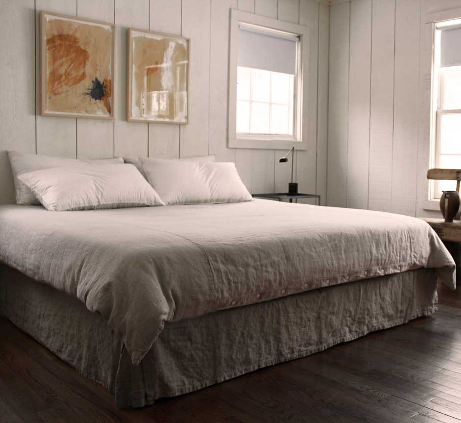

Bedskirt
Orkney white or natural
twin 38" wide x 76" $200
queen 60" wide x 80" $230
king 76" wide x 80" $240
calking 72" wide x 84" $250
We make these properly: the fabric continues 3" under the mattress so the decking doesn't show, and we put split faux pleats at the bottom corners to accommodate bedstead supports as well as box springs.
My standard drop is 15", yours may be 16", 17" or more. There is an additional fee if you need a custom drop. Please write in the notes at the end of your order or email me.
(Just an aside – if you are buying a new bed, consider a sleek sprung slatted base instead of a clumsy box spring. It is more comfortable, looks lighter and more elegant, and you regain the space under your bed. Besides, alternative cultures breed inside box springs).
Orkney white bedskirt
Contributor Bridget's home in the Canadian rockies - spot the Orkney white bedskirt (plus Rough Linen sheets, pillow slips, shams, etc.)
 Richard Ostell's Rough Linen Orkney duvet cover and bedskirt– I had forgotten how much I loved linen, but Richard Ostell, a respected fashion and home designer, reminded me. The shots were from his home in Westchester County, N.Y. Rough woven linens graced his tables, windows and bed like a pure sigh of relief.
I got him on the phone.
"I'm calling to talk about our mutual love of linen," I said, breaking Rule No. 1 in journalism: Never show your bias.
"I'm not a fan of superfluous detail," he said, in a British accent that oozed refinement. "I'd much rather have something plain. Linen is honest, simple, humble, durable and has an element of having been touched by human hands."
The former creative director for Liz Claiborne, Ostell now has his own furniture and product design company. His work, whether in fashion or furnishings, reflects style that doesn't scream. His home whispers, "I am here to comfort, not impress." It's a mantra more homes should adopt.
"Linen is this great-looking fabric, so why don't we use it more?" I ask.
"I'm puzzled by that, as well," he said. "Possibly because it's naturally rumpled look gave it a reputation for being too casual. It got pigeonholed, but it can be very sophisticated. I think a lot of people don't understand what they can do with it."
"I think it's the ironing," I say. "All that pressing and starching. Who has time?"
"I never iron linen," he says.
"Ever?"
"It defeats the point of it. The rumpled look is part of its beauty. I love it right when it comes out of the dryer fluffy. I don't think people should think it looks messy. It should be left as it is." – from Marni Jameson's syndicated column


{kind=link}
{kind=link}